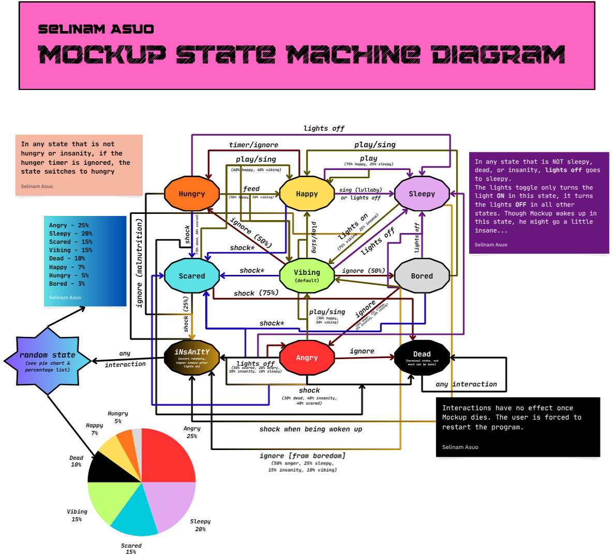

Mockup originated from a graphic design project that I (Selinam Asuo) worked on in my sophomore year of high school. The project aimed to highlight various devices that represented advancements in technology throughout the past few decades. After working on the project for a month, I entered it into the Pennsylvania Media and Design Competition in 2023, and got third place in the High School category in the Philadelphia region! From there, I was inspired to continue my graphic design journey by making various posters and promotional videos for the afterschool clubs I was apart of, like robotics, Model UN, class council, and prom committee.
To retain the legacy of the initial design project from sophomore year, I reimagined Mockup as the face of my website and promotional branding. He is mostly based on the Pokemon Jigglypuff, but also has mythical horns and a pair of headphones to represent his divine and (typically) laid back nature. As seen and described in this project (and through Mockup's eyes), things can get a little zany. If you want to see more of Mockup, the design project he originated from, and my other graphic design related works, check out my website linked above!
Anyway, Mockup has gone through hell and back in the very few years that he has been around for. From restless nights in the studio trying to make props for the annual homecoming dance, to designing posters for clubs day in and day out, this guy really never gets a break.
Worst of it all, he really has no one that he can relate to since his best friends that he used to gamble with every other weekend were murdered before his very eyes by a mysterious dragon-like figure who lost all of his money that he was going to pay off his student debt with. He watched as their blood soaked into their clothes.
Ever since that fateful day, Mockup has never been the same, and it is your job to take care of him by fulfilling his basic needs, keeping him alive, and evaluating his mental health.
As of right now, this project is in a playable beta testing state. If you're the kind of person who likes to just dive into things and figure things out as you go, you can play with Mockup here! If you want more details on how Mockup works, feel free to read on and view the actual documentation!
These are the ways that you can interact with Mockup.
Mockup can take on 9 different moods depending on a variety of factors. Some are more zany and than others...
| Index | Mood Name | Description |
|---|---|---|
| 0 | Vibing | Mockup's neutral/relaxed state. He can become hungry and bored in this state. |
| 1 | Bored | Mockup feels neglected. If left in this state for some time, he can become angry, sleepy, insane, or just vibe. He can also get hungry in this state. |
| 2 | Sleepy | Mockup feels tired or over-soothed. Can be safely left in this state since he does not get hungry. He can either be woken up by switching the lights (putting him in the neutral state, or possibly making him insane), or via shock (which guarantees insanity). |
| 3 | Happy | Mockup is elated and energetic. Playing with him will most likely keep him happy, but can put him to sleep. Singing to him lulls him to sleep. He can get hungry or bored in this state. |
| 4 | Hungry | Mockup needs to be fed (i.e. most of the other interaction buttons don't work). If he is ignored, he will likely die. If he is shocked, he can stay hungry, but will most likely die. |
| 5 | Scared | You scared Mockup. You made him recall that his former friends have died and he feels alone. He can become hungry or bored in this state at a slower rate. He can be alleviated by singing to him or playing with him. |
| 6 | iNsAnItY | Mockup has lost control as he recalls his brutal past. His hunger is chaotic. Any action taken can push him into any other state (including death). |
| 7 | Angry | Mockup is frustrated and volatile. Singing to him or playing with him makes him vibe or happy. Turning off the lights or shocking him can randomly transition him into a few states. He can become hungry quicker, but bored slower. |
| 8 | Dead | Mockup is deceased, pretty self explanatory. You have failed as his caretaker. Interactions with him are negligble and he can be "revived" (cloned) by restarting the program. |
There are quite a few timers associated with this Mockup simulation that are dependent on his feelings and states. This is a list of these timers that may or may not lead into some zany effects:
Mockup has some random quirks that are not listed in any of the sections above. These quirks make some of the interactions like a gambling machine in specific states, kinda like Mockup's good old gambling days with his friends before they were killed before his very eyes. Here is a summary of some of the most interesting ones:
The image below shows the complex finite state machine logic diagram that this project works from. Despite what this subheading suggests, the states refer to Mockup's moods, not the 50 subjectively divided areas of land making up the United States.
Clicking on the image will open a PDF version of the diagram that should be easier to look at. The diagram is also out of date at the moment. The tabular format below is most up to date.

The table below attempts to simplify the FSM logic diagram above into an operational description based tabular format that is easier to interpret. This is also the most up-to-date version of the state machine representation as it is the easiest to update on a whim.
Note: Whenever a timer resumes after being paused, the timer starts at 0. Switching between states also resets the respective timers.
| actions | 0 - Vibing | 1 - Bored | 2 - Sleepy | 3 - Happy | 4 - Hungry | 5 - Scared | 6 - Insanity | 7 - Angry | 8 - Dead |
|---|---|---|---|---|---|---|---|---|---|
| PLAY | 3 | 3 | 2 | 3/2 (50/50 split) | 4 | 3/0 (60/40 split) | 0/1/2/3/4/5/7/8 (see Insanity Effect) | 3/0 (50/50 split) | 8 |
| FEED | 0 | 1 | 2 | 3 | 0/3 (50/50 split) | 5 | 0/1/2/3/4/5/7/8 (see Insanity Effect) | 7 | 8 |
| SING | 3 | 3 | 2 | 2 | 4 | 3/0 (70/30 split) | 0/1/2/3/4/5/7/8 (see Insanity Effect) | 3/0 (60/40 split) | 8 |
| SHOCK | 5/6 (90/10 split) | 5/6 (80/20 split) | 6 | 5/6 (90/10 split) | 8/4 (70/30 split) | 6/8 (55/45 split) | 0/1/2/3/4/5/7/8 (see Insanity Effect) | 8/6/5 (see Anger Burst) | 8 |
| LIGHTS | OFF -> 2 | OFF -> 2 | ON -> 0/6 (75/25 split) | OFF -> 2 | ON -> 4 | ON -> 5 | 0/1/2/3/4/5/7/8 (see Insanity Effect) | OFF -> 5/7/6/2 (see Diffuser Effect) | 8 |
| NO INTERACTION |
Hunger Timer runs | Neglection Deflection ensues Hunger Timer runs |
All timers paused | Hunger Timer runs | Starve Timer runs | All timers paused | Insanity Timer runs Insanity Effect ensues |
CARDIAC Timer runs | No timers active |
This question would likely make Mockup flash a static grin as his lightning-bolt headphones flicker and hum solemly as he swayed to a calm, charged, and slightly unpredictable rhythm only he could hear. As briefly mentioned in the introduction, Mockup most resembles the Pokemon Jigglypuff. In Pokemon, animal-like creatures are captured, trained, attacked, etc, and are capable of showing various feelings. This monstrosity of a machine mimics the typically unpredictable nature of Pokemon. Just like how Jigglypuff is a fairy-type Pokemon that has some quirky actions when angered and can sing in certain scenarios, Mockup is a mythical somewhat-domestic beast that is often calm and friendly, vibes to music, and has some unpredictable behaviors in certain actions and states.
Technically, Mockup operates as a complex finite state machine transitioning between several emotional and behavioral states (such as Scared, Happy, Insane, Hungry, or Dead) based on user interactions, internal timers, and random probabilities. Each of the 9 states represents a specific emotion and players can preform different actions (such as playing, shocking, feeding, or neglecting) to allow Mockup to transition between states. This structure supports the emotional unpredictability that I wanted Mockup to express through a mix of code logic and random behaviors, just like the way Pokemon behave.
Additionally, Mockup also somewhat mimics how I felt throughout highschool. There were so many unpredictable moments that stemmed from the insane amount of pressure that I put on myself through balancing demanding classes, extracurricular activities, and volunteering. Though I was content and Vibing when completing these tasks, there were also moments where I felt I was going Insane or had so much Anger toward those who always seemed to whine and complain about the way me and my friends would manage school wide and class wide events (which is so immature and embarassing, especially as upperclassmen), but were unable to pose an alternative to make things better or even assist in these tasks to execute them more effectively. Balancing all of these conflicting thoughts and feelings forced me to mask that insanity and anger through simply smiling through the pain "Happily." Though there were some ways that I managed this stress in highschool beyond just throwing it under a rug (like listening to music, and talking with my closer friends), I truly neglected my mental health toward the latter half of my highschool career, especially my senior year.
Yes, there are some parts of Mockup's back story that are greatly exagerrated in my life (like friends being killed before his very eyes). However, many of those resonate particular details highlight how I felt after graduation. I was no longer going to see my classmates, some of which I truly wanted to push away from due to their manipulative two-faced behavior that only aimed to use me for their personal gain, and others of which that grew to become some of my closest friends in just 4 short years after transitioning from a small Christian private school that I attended for 9 years. As of now, it truly feels as if we are all too busy to talk or to hang out as frequently. However, during the very few times that our schedules align and we meet up to do something together, I always come back to my bed after the meetup teary eyed, recalling how welcoming and accepting my friends are; how grateful I am that my friends not only chose me, but chose to continue to stick by me and support me through my ups and downs.
Though this isn't the "technical description" that you might have looked for in this project, it shows how I was able to portray my vivid feelings into a personal project, and I am extremely proud of the result!